Issue #1 — To Utopia
The Cleared Walkway
Part 1: To The Cleared Walkway
It is time we leave existentialism in the past. An idea that arose from a particularity of the past that we no longer have access to in our century’s excess. It may still ‘exist’, but there was a time when it wasn’t as childish as it has become. To look upon the vast, roaring oceans of our world today and existentialize about something so particular and alive is a reactionary act, yet it is still very clear how such a reaction could be generated by the structural context of what exists today. Godard understood this well. And no reactionary existentialism could’ve produced the works he did, especially in his later years.
Given how such a mass exists, sifting through the parts must not be done by treating them as mysteries. We still are, maybe more so than ever before, determined by an incredibly vast network of machinations and contradiction. In this, the cinema’s articulative power has disappeared when faced with a kind of generational attitude of assumed incomprehensibility when you could argue culturally it is needed most in such an ocean of confusion. The flood of information is the destructive weapon currently wielded by the state - and otherwise - so we need our Noah’s Ark. It is crucial we begin to see again. How is this done?
First, I believe there to be two distinct epistemological “realms” interlocking within the frame of every moving image that I find crucial to our ability to sift through the possibility of a future for cinema. The designated concepts outlined below are necessary to the implication of the union between the world and frame once again.
The Productive Realm:
All direct material presence in a frame. Mise-en-scene, the arrangement of bodies and objects. Broadly speaking, the image and what moves in the frame.
The Productive:
All direct material presence in a frame, and how it relates to the negative. Or, the solidification of a thought. The materiality that you can see that is forced into the negative’s discourses.
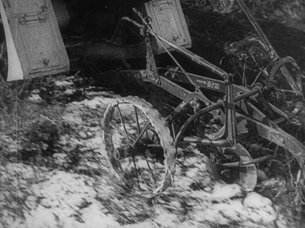
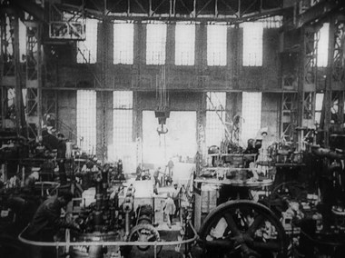
The Negative Realm:
The place in which the contexts of the world travel into The Productive Realm and determine it epistemologically. You can call it history, ontology, phenomenology, the real, etc. The Negative Realm is the acknowledgement of the possibility that these will appear. A symbol of the world in the sense that the lack that exists when a frame ends implies the existence of the actual real, uncinematic space’s continuation and with all that one may believe about it.
The Negative:
The infinitude of ontological particularities that exist outside of a film, in our real world, that then through what is present within the productive, begin to appear in particular ways.
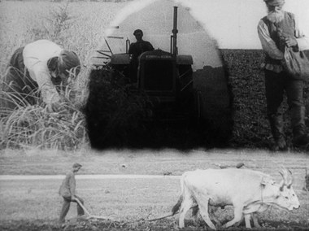
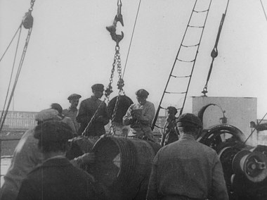
It began with Workers Leaving the Lumière Factory, Washerwomen of the River, and so on. Most of the time the central distinguishing factor of the film-image is the set of relationships the human being is cast into. Those workers walking forward, showing such a poetic submission to gravity, moving fast, putting a foot in front of the other, all to walk off frame into real life. They are no longer objects but emergent symbols in their negation. This is the cinema. Not realism, but an appearance; a symbol.
The outside into which they pass continued on somewhere and truly existed. It is a void to us, yet the idea of this presence veils the moments they are on screen and are actually visible, really present. That right there is ‘the world’ the cinema is always unionizing with. The Negative Realm is manifested in the idea of the existence of materiality in the frame. The hats and dresses these women are wearing, the top hats the men are. The road and sidewalk with a man riding his bicycle and almost falling. The way The Negative Realm relates to this is not the direct visual understanding of these things in accordance to exact framing just yet, but whatever hypothetical presences had to actualize and exist before filming to bring these moments into existence as they do relative to the camera; again, ‘the world’. Why do the hats look like that? Something about the ontological presences present within the conditions of the world. Why do bikes or factories exist? A question with infinite possible answers. Questions of this sort, being unanswered in bare film images, ontologically generate a vast network of interpretive possibility. This is the perfect example of how The Negative Realm essentially asks questions. It is the ghostly appearance of the infinite (or broadly, you could say “meaning,” but I think that gets a bit too strict). Where that appearance comes from is The Negative Realm, the epistemic space where the invisible exists in the frame, guided by the idea that we know there is a world outside of it that we cannot see.
The inverse, The Productive Realm, is the actual visualization in movements. Whereas in The Negative Realm I used the women’s hats in Workers Leaving the Lumiere Factory as an example of the manifestation of the appearance of a vast ontological ecosystem. The Productive Realm is the actual acknowledgement of the visual field. The women’s top hats, regardless of what The Negative Realm says about why and how they came to be in this image, kind of bounce and float with each step forward they take. The man with the bike’s legs gets trapped as he almost tumbles over. The Productive Realm is the stripped-down area in which there is simply the pure material. Objects and subjects are relating to each other, movements are generating a whole, but all before the subjective contexts of The Negative Realm travel into the image.
The union of these two realms invented everything we have come to know about “progressive formalism,” from the avant-garde political zealots existing in world cinema cultures across the globe to the old grumpy MacMahonists insisting everyone is innocent (said in jest with love and respect!). It is a strange system of generative force in which the tiny moving shapes and logics depicted by The Productive Realm are ontologically determined to invent a particular relation to The Negative Realm. Truly, this is the logic of how the infinite exists in the cinema. Presence has to have become with particular reason if we are to authentically, once and for all, declare existentialism unfounded. This presence as it relates to a frame, then, can only possibly “show” what and how things are dependent on the aestheticization of The Productive Realm. Nothing can be viewed as a mystery, as I have stated. There isn’t a single thing you can view in a frame of cinema, from an object to the grain that overlays it a millisecond later, that exists in an epistemic void. Whatever it may be that is on the screen, it has a logic that existed prior to the gaze of a camera. This is completely without exception. The Productive Realm asserts the presence, and The Negative Realm speaks of this presence. This is always how it has been in cinema, but I am of the opinion that in the twenty-first century, realism is kind of collapsing inward. And I don’t think relations to it intellectually will do anything for the future of this art form. What we need is force. Montage, essences, appearances of ‘wholes’ succeeding one another. The cleared walkway. What we must strive poetically towards, within the vastness of our innumerable subjectivities that then begin to relate to The Negative Realm, are ‘symbols of clarity’.
In the recesses of whatever forces bring the world’s relationships to fruition outside of them being filmed, the utility of cinema has always been to the appearance and depiction of these modes, even as far-away ghostly crystallizations. This is something Rossellini understood with such clarity, as did Sganzerla, albeit in a very different way: utility. A kind of radical unfolding of direct processes containing multitudes of context splintering and flowing in every direction as a means to extend their reach as artistic objects. The Negative Realm invents the contextual essence of objects with such ease, as they are designed to be as historically accurate as they can be, and The Productive Realm simply actualizes their use through the view of it. Reality becomes sublime as ours is. But Rossellini was interested in depicting facts; the space where facts happened and were achieved, and what materially has to take place for a fact to be true. Sganzerla was more interested in space as a means to show how historical facts come to be. What conditions are set, what exists before the “fact”. The two distinct questions in each of these great artists are, for Rossellini, what, and for Sganzerla, how. What they share, however, is this: the creation of direct progressive semiotic charge through the deliberate attempt to make The Negative Realm’s discourses appear. Within these films, The Productive Realm is moving so in tune with itself, perfect handshakes of objects lyrically venturing through time, actualizing The Negative Realm’s relation to them, which wrings the outcome as a very unique relation to history. At the time these came out, realism was deemed the kind of correct generative force of cinema for the political, social, and historical intentions of these authors. Rossellinian utility has, of course, historically borne fruit through the labors of realism, but we must come to understand that it is no longer the 20th century. I believe Rossellini’s films, especially his work in television, were the closest cinema has gotten to an ability to achieve a larger understanding of history than text has. Paradoxically, though, still in the void of subjectivity relative to the factual - the inability for any one piece of filmic information to translate the concrete truth causes the appearance of “the valiant attempt” or “ the best possible”, relative to the twenty-first century, to ontologically split itself down the middle from realism into a surrealist realm the films themselves try to conceal - quite violently. This surrealism is the existentialism I spoke of in the first paragraph the cinema must break from, albeit obviously appearing in Rossellini accidentally only relative to a century with historical conditions he would never even witness. The idea that, within “infinity”, this kind of depiction of a fact is no longer really operating within a reality where knowing that fact is a utility that extends past. The fact itself has become void in the sense that the burden of unarticulated information is now layered, in “the information age”, over the depiction of a realism (and in relation to this idea of utility, over the “ facts” depicted) has become culturally too heavy. Rossellini’s films remain the gold standard for this idea of cinematic utility, but what that particular type of tool currently gives our century relative to cinema particularly, is completely “of abstraction” when related to this particular idea of “learning facts” in a more complex context past just simply the documentation that something historical indeed happened and the recording of its materiality. Now of course, I do not mean to diminish the importance of these works (or the history they depict!), but we have come upon a time historically where facts, false and true alike, no longer occupy a place of direct cultural perception. In this, while it is obviously incredibly important to have historical understanding, the cinema is no longer a place where “facts” properly can be rendered outward into cinematic form, if you could ever even say it was at all. The ignorant remain so, and the progressive thinkers have come upon too intense a burden of ontological epistemic particularity to sift through in relation to the depiction of a “fact” in accordance with “realism” as all of this relates to what the conditions of the twenty-first century are doing with the concept of information. You can still learn a fact through Rossellini’s films, especially his biblical films. You will see and obtain the ideas that flow freely through them - and make no mistake, these films still remain masterpieces. Tag Gallagher, in his text on these films Making Reality writes this about the masterpiece The Age of Medici (1976):
It is easy for an historian to write, “Cosimo de’ Medici greeted the Venetian ambassador.” This is accurate. It is something else to provide the clothing, the room, the furnishings, the ambience, the voices, the lighting, not to mention the words, vocal tones, comportment, emotions and actual bodies of Cosimo and the ambassador. All this must be inaccurate, a portrait not of Cosimo, but of an actor. What were people like then? What was Florence like? We can only imagine, like Walt Disney, Rossellini, or Giotto.
If factual depiction in the cinema was already subject to question when this was written, by 2026 they’ve completely melted away without a shortage of perceived truth on the individual level socioculturally. Without the confirmation of a depicted fact present in a film, it is clear how such realism represents surrealism. You could argue Rossellini’s television films, in many ways, are works of this ‘surrealism’ contextually. While again I do find these films to be incredibly towering works personally, I still do believe there is a value in at least searching for a way to make cinema actually valuable outwardly to our world through its ability to design the ‘pictorial’ relative to the outside, which in turn makes Rossellini’s exact kind of logic a bit useless to the current cultural conditions we live in.
Never throughout history has art had the ability to still wonder about itself in such a chaotically diverse ontological landscape like the one we have today. The only problem is no one actually does the wondering much anymore. The more disordered our cultural understanding of “truth” becomes, the more obvious it is that there is some kind of totality we exist in, somewhere, in the sense we still actually see the world move as it grows more and more ungraspable - but our artistic methods of understanding this, all stemming from the past, are dead. We need new ones. Today it must be at the very least considered that real labors of this “cinema as knowledge for utility” are currently impossible in the one sense that there is no longer common ground for the ability of the realist image to be translated into a mass-understood sociocultural reality. This lack of an actual translation of understood culture, the disarming of the idea that believed facts are reality, generates a context relating to the arts, that there is no more “learning” to be done in the direct material sense that Rossellini intended. It is now time to begin studying what comes after the complete realization of a total reality. If facts have collapsed as an “anchor” for “education” - all possible facts violently run wild, and the progressive taming of this process is what I view as the inherent value of the ideas of The Productive and Negative Realm. Art that forcefully pushes out the thematic particular in favor of layering this established idea of total presence with a “view” of infinitude in which every possible particular is already assumed. Where the seventh art should be on its way toward, is not to expose what our world is, but establish a relation to an already existing, understood mode of what it is that a viewer may have. Something that relates to every crevice and is without explanation. This is knowledge today: linking the subjective into a whole on a new plane we’ve never taken into account. Take the camera and use it as a flashlight with more of an epistemic consideration of the true essence of the darkness you are shining the light into, rather than what you decide to place within the spotlight, and suddenly you are able to focus on the world instead of a pocket of it.
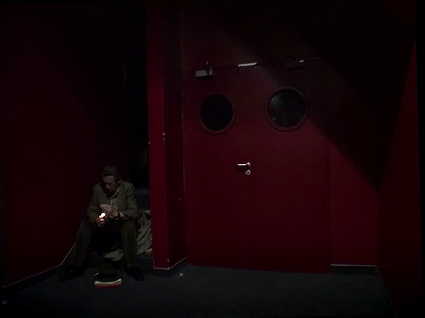
Part 2: Duvivier, Schroeter — The New Utility
Immediately after my first viewing of Werner Schroeter’s Deux (2002), I sprang up from my seat in a state of emotional fervor about the future of the seventh art. Almost immediately, I took to publishing a small and quite frankly intellectually ‘unwritten’ excerpt about how Schroeter can act as a skeleton key to the continuation of the medium in the 21st century as Griffith, Murnau, and Eisenstein did for the 20th. This is still a sentiment I hold - just in my fervor, I didn’t correctly outline what I mean, and the context of this article is the perfect place to do so. To do this though, we must first go to the works of Julien Duvivier.
In one of Duvivier’s most radical films, A Man’s Head (1932), he does not simply cut back and forth from one image to another in one single isolated chain that lasts only a few seconds. In this one single instance, the image is between a police officer with a landscape behind him, and a man in the back of the police car, having just been given an escape route, trying violently to understand the situation he is in. For a moment he looks back and forth, up and down; confused and to no avail. Blind to the simplicity of action. He gets away, and the film continues in its usual modality. This sudden joust of context feels strangely outside of a film that has not previously and will not again cut back and forth between shots directly without ‘circling back’ through others. Mise-en-scene is something along the lines of particularized temporal containers, but the definition feels clumsy, as many are applauded for their ability of continuity. Making editing invisible is something sought after for some. What is being contained in that? That is immediate expansion. “Containers” feels the wrong word for the likes of Hawks or Renoir, to Rivette or Chabrol. But for Duvivier - the unfortunately unsought-after- this word is the healthiest possible description. The Productive in this film is truly contained in the sense that these images become consciously isolated from relating, smuggling in a relation to The Negative Realm that plucks from infinity its relation to crime, violence, social isolation, the general whirlwind and dislocation that is afforded for those involved in the schemes of the powerful to actually generate its own relation to what is now an expressionism through which exists due to one's necessity to look to The Negative Realm’s implications and discourses I’ve just mentioned as a kind “epistemic” continuity amongst a Productive Realm that is purposely disconnected. A film that is scattered to the wind, the unfolding of new spaces acts as a whip cracking down and extending outward with its cutting. The organization of social symbols remains in their place relative to drama while the film constantly changes the position of our view of these symbols. I almost want to use the word cubist. The Negative Realm here is what keeps the montage to having context in a disconnect even more experimental than the Soviets. To me, it is incredibly moving. The idea that characters must see through a reality structured like this; one constantly shifting its position. Adding more potentiality and taking it away. Symbols of Clarity, no? It is a view of the situation we find ourselves in, and I keep speaking of its culture. In the particular type of montage present within his work, the generative force is not of visual continuity within The Productive Realm but in the succession of “worlds” in which The Negative Realm is what sets the coordinates of the viewer’s sight of a “view of totality”, while always implicating specifics relative to this totality, and suddenly there is a combination of complete arrangement and complete dislocation. It is completely new, not like the Soviets, nor Griffith, but a particular generalization that allows a sort of concept of symbolic identities to emerge in themselves. Every cut is to a new world; but unlike Griffith, the relation to the previously shown world is not of a direct sociocultural infinity that almost logically relates back and forth, nor the Soviets that are particularly relating the contextual embrace to an almost total disconnection, and finally, it is also not really a combination of these opposites either. It is something new that was never considered so.
Pre Nouvelle Vague French cinema - the likes of Duvivier (and perhaps Gremillon) did something for cinema that few even noticed. And this lack of cultural impact on the later formalist thinkers/critics of any variety is to me partly the reason for the slight petitioning against the idea that allegorical symbolic realities can be useful to formalist thinking. Symbolism and metaphor obviously have had their ‘time in the sun’ in the arts, and in cinema less so but still a prevalent and worthy run; it's just that there is a slight attitude after Bazin’s thinking (and God knows I mean to wish no harm on Bazin!) that the idea of symbolic or allegorical cementations is low, or even reactionary. That realism cannot be progressively attacked. Not really an idea from Bazin himself, or even necessarily his devotees when he was alive, but a just barely crystallized attitude that has grown over the years and yet so subtly. I wouldn’t even know how to point it out; you just see it manifest in what images are deemed as useful and vice versa. People everywhere fall from thinking about Tarkovsky yet still “respect” him. It is done in a way where people can almost act like it has not, or that there can be “the rare good use of a metaphor,” but broadly they usually are useless. That metaphor is an unconsidered and unchanging violent objectivity in a film. And it makes sense! Back then it was all about materialism, Bresson and the screwballs. “Theatricality” (an abstraction today, as they rightfully mean to speak of anti-formalist cries to an audience, but now whether a film is “theatrical” or not, these cries to an audience are the accepted mode of cultural transportation and, in fact, what is desired) was seen as a problem. Those films didn’t survive the 60s for a reason, and we should be thankful they can come back now when we actually need them.
Now, Duvivier’s films are not exactly filled with flowering allegory, and it may be perplexing to hear me bring up someone like Duvivier in relation to an argument for reinstating the virtues of allegorical thinking and symbolism. But the intelligence I think these films have given the seventh art is not necessarily the question of how to use unchangeable symbolism, a material world-building required for the appearance of a real symbol that will not remain stagnant in its objectivity. Cinema’s value is always within its ability to create an expressive mode; how it can give something out of the recesses of what exists outside of it that is not tied to a linguistic system. Something not tied to the espousal of mathematical facts (and we’ve talked about facts), but still giving something specific. Of course, subjectivity is always present, but an image is arguably more concrete and particularized as something that dives into subjective potential than a sentence. In subjectivity, one can see the same images differently. But the term symbolism or allegory in the way I mean does sort of come closer to an idea of hardened meaning in the way language does than, as mentioned earlier, the images of filmic “materialists”. An image with a meaning usually closes itself off into becoming that meaning and that meaning alone, but a symbol within the possibility system of the frame is a whole different concept. Now how do we establish ‘the hardened symbol’ as a singularity in the possibility of the frame? The Productive must generate itself to surround. Allowing that singularity to become larger, the “less” that exists in the frame, without the destruction of a correspondence with The Negative Realm; few understand that Duvivier showed us how.
The infinity present through the relative materialism in the works of Howard Hawks, moving into the various new waves, has become very intensely articulable. They do this in a way that seems to be the direct example of the anti-linguistic, against an espoused meaning approach. “Pure cinema,” as they call it. The space is simply a ground, moving straight, forward, and side to side. This is in no way a bad approach, but one that is enlightening to the dismissal of Duvivier to their project. The spaces travel from their visible starting point into all objects and subjects very directly in Hawks. The associations wielding the epistemic wholes become very direct, almost not allowing the idea of “allegory” to appear because nothing is first clouded. It is a purity that Duvivier couldn’t be bothered with. Duvivier instead starts at the abstracting of the geometrical starting points of his images in a way that moves and clouds the ability for the Hawksian “immediacy” of the travelling associations. What he is doing is essentially designing expressive ‘realms’, designed for the appearances of stories/drama, that allow moments of their own to not only actualize themselves, as objects succeeding each other (montage), but also scramble the codes present to what one might call “realism”. Some may call this kind of filmmaking solipsistic, but I believe it is actually generative. Creating new shapes and formats in which blocks of The Productive Realm actualize The Negative through the cuts. From Duvivier’s perspective, Hawks is the solipsist, no? The idea that reality can only travel through a single straight line into its movements; that the starting points can’t be from a hidden place. Dogmatism!
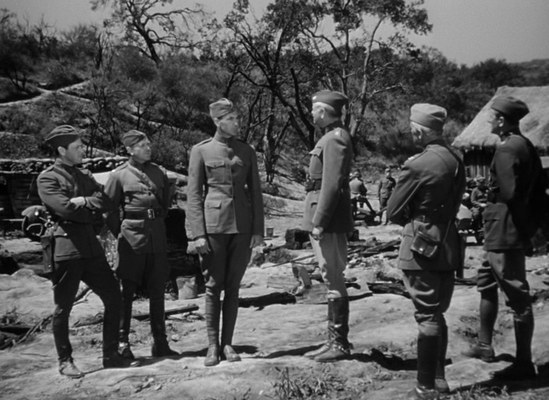
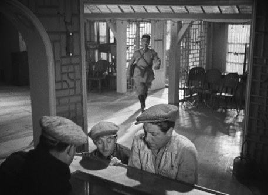
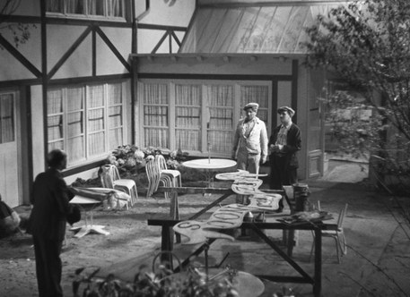
It must be said, though, you could argue Duvivier and Hawks are very close to almost being described as polar opposites in approach. And I only bring him up because he perfectly explains the reasoning Duvivier has been relatively under-cared for aesthetically in the available cinematic thought pantheon. Make no mistake, Duvivier is playing his own game. Poker that is; as one of the core ideas is strategically showing your hand over the course of a period of time. He is engaged in an act of allowance. It's this: he starts with an image as any filmmaker does - and slowly, it begins to logicize itself. When he cuts, it could be anywhere in the room - even a wide shot of the entire room - but the cut plays no part in the actual particularizing of the mode of the previous and incoming frame. Containing them into being themselves for a very particular kind of succession in which The Productive Realm and The Negative Realm exist as isolated or parallel but paradoxically generate this as a union. It is so incredibly radical; his images are very lyrical, flowing, and sensuous. One could even say erotic depending on the film. These essences then are contained, whole expressions that become consciously isolated but moving forward, together as separate ‘identities’. So finally, there is a strange aesthetic context that shares an unconnected trajectory that is established within the same epistemic horizon. In this, whatever space is depicted in front of you, with whatever context from the world has planted its flag, it arrives due to the “pure shape” of the space present in single shots and their wielding by Duvivier. It’s something very much coming from a sense of intuition, symbolically representing the idea that it is ‘simply a pocket’ emerging completely by chance in the world and hence The Negative Realm. A paradox between the idea that the space is particular without established reason. It appears to be the representation of history, culture, the social space - but the exact relation to these things becomes simply un-articulatable without the subject. So in this, the subject with his hypothetical dramatic context; Jean Gabin’s giant eyes looking upon this strange ocean, emerge as “symbolic” because the world is depicted as disconnected from exacting spatial continuity while still maintaining the necessary idea that space must form a system around drama to be given the epistemic fruit of art. This is how to destabilize the linguistic stagnation present in the idea of the allegory, while remaining with a desire to represent its chosen meaning consistently. The environment becomes an abstraction when thought about relatively, so all subjects and objects important to the trajectory of an understood narrative become beacons of representation that cause the dis-logic of the idea of the environment to come to a screeching halt. Or, to use a term from earlier, subjects and objects relative to the simultaneous void and presence they are cast within become the spitting image of what I meant to imply with the term “symbols of clarity.” In this, Duvivier’s frame cuts through the noise in its affirmation of the existence of life within (or more so surrounded by) abstraction. The Negative Realm exists in his films as almost completely immaterial. Ideas float into subjects without a single card thrown down onto the table of materialism. Broadly, what is to be studied in his work is shape, but more of the kind of ontological architecture The Productive Realm shows as the ‘shaped’ object that relates to The Negative Realm and how both of these can synchronize to create progressive relations forming wholly outside of realism. How deliberately holding off pieces of spatial continuation in hyper-specific montage contexts essentially - completely setting aside the broader contextual possibility of the idea of that spatialized environment- directly creates a “stage” where a symbol can actualize itself as a part of the present materiality on the screen, finally allowing meaning and liberation to coincide.
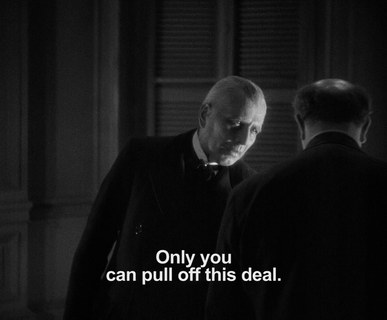
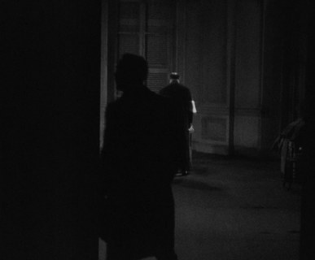
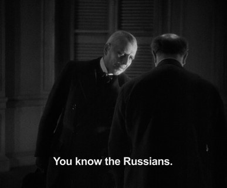
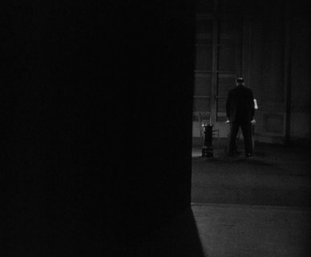
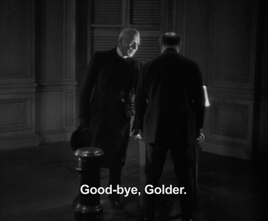
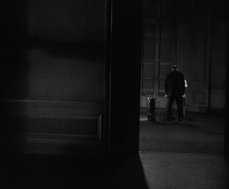
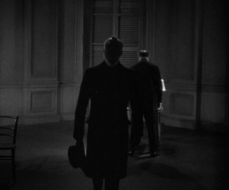
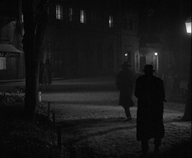
From what I have seen, I believe the perfect bridge from Duvivier into Schroeter would be Duvivier’s horror anthology Flesh and Fantasy (1943) (arguably a title you could use as a statement to speak of Schroeter’s filmography!). The supernatural aroma leaking (or perhaps floating like a ghost) through the frame horizontally, all while following the established logic I have presented above, provides a perfect example of The Negative Realm establishing both cultural presence (as the supernatural often takes the form of an expression of subtle interiors within our culture) and the idea of universal allegorical thinking in the cinema. It should show, above most films, that, of course, as content is dependent on the logic imparted by form, The Negative Realm (which you could also argue these two concepts are the twenty-first century’s philosophically updated and more complex version of the age-old question of form and content) is simultaneously determined by The Productive Realm. The first story about The Mask that makes the ugly beautiful becomes a kind of universal metaphor for the social fabric of our world. A woman in love unrequited learns of her effectual abilities in the midst of the historical tradition of Mardi Gras. Simple conditions for The Negative Realm to then essentially “go to work” on, and as we watch, culture appears. We have established Duvivier films reality as an abstracted space that only logicizes itself when drama becomes. The subjects and objects are placed contextually in the center, and the space exists but only for whatever relation The Negative Realm wants to conjure. Duvivier’s system is moving and flowing like no other. For one, if this story were filmed with less montage and more continuity, I believe the actual allegory would completely fall flat, as it would essentially begin to impart The Negative Realm’s relation to this symbolism too ‘strictly’ and begin to represent nothing but the linguistic aspect of metaphorical meaning because the connections of continuity would only be able to organize around the single idea rather than what Duvivier does consistently within his filmography. His montage does not use metaphorical meaning to simply be something that repeats itself consistently - The Negative Realm in relation to The Productive, when meaning is meant to be imposed within the formal system Duvivier has developed, is predicated on the idea that the symbol itself is what develops. Where “realism” with a metaphor would only allow structural analyses, Duvivier shows the symbol itself is what multiplies when expressed in accordance with an abstract surrounding that is visually ordered. The Mask remains on the woman’s face for most of the film. She walks into rooms, speaks to ghosts - finds love on Mardi Gras. Countless visualizations, most of the time incredibly expressive and with an almost stoic quality of still subjects standing against the chaos that surrounds them, that rarely relate to each other with an idea of “sameness” within The Productive. A metaphor that can represent the same thing constantly and also appear new relative to its current place in both drama but more importantly the space The Productive Realm determines, and suddenly, a symbol properly exists in the world, and we can see hardened meaning as a piece of it that progressively melts into The Negative Realm relative to the film and hence truly exists in some way. The idea that every shot generates a new world and the context of The Negative Realm formulates around isolated pieces of The Productive almost makes all of that context exist as little pins on a map that you have to find over and over in different spaces. Symbolism; not realism. Symbols that mark The Negative Realm changing position rather than reality changing in itself, but the relations come naturally if you care to think. Two systems, separated, not to isolate from each other but to generate a new, never considered relation to filmic reality. This reality allows itself to be itself in a way that still invites us to think about it. Forever, thinking about cinema kind of creates a disconnect as the context you see arrives from the past into the present, but Duvivier here has finally come around to say. The Walkway has become Cleared.
Having passed through Duvivier’s system, we now finally arrive at Schroeter. In Duvivier, we have come to understand how the view of hardening a representation comes to assert itself outwardly in change. The epistemological similarities between Schroeter’s system and Duvivier’s are completely undeniable. The fracturing of space - space that is known to symbolically continue without being visualized necessarily as continuous (and if so, logically according to traditional realist practices) - provides the idea of the stage or ground finally. Now, Schroeter’s relation to this “stage” situates his filmography as the one single perfect example, to me, of situating the distinction between The Productive Realm and The Negative Realm as clearly and precisely as a filmmaker ever has. If Schroeter is in many ways a Duvivier of the future, he is a Duvivier with a conscious use of “universal metaphor”. A Duvivier unafraid of imposing an intended symbol. A Duvivier without the forced political and philosophical negations present in early studio filmmaking. A Duvivier with an actual eye for the depiction of a society or experience or history that stems from his own artistic thinking, whereas previously studio filmmaking caused these to be somewhat incidental for Duvivier among others in many ways. Now circling all of this back to the originally established idea of utility, which within our century represents the desire for depicted images to broadly and simply give something of outstretching importance to the culture they are within instead of teaching our culture particularities that can no longer be of use with cinema as the tool to show them. Cinema no longer has the ability to show a fact, just a kind of bare faith. In this, Schroeter represents how one takes to the world to ‘show what there is’; the age-old tradition, without a submission to a faulty replication of realism. The replacing of the utilitarian image with the symbolic becomes in itself a new kind of utility if it exists in accordance with us. There is almost an idea of faith in his work, in how harshly the idea of “images” is established as the kind of ‘reality’ of a ‘story’ while simultaneously attacking the idea of any present relation to realism whatsoever. Schroeter’s films give you the feeling that reality must look like this if you squint. Schroeter’s world is there, hidden amongst this machine we all live in, as is every filmmaker’s! A faith that a lyric can move to the outside is the key to thinking of Schroeter’s importance towards the future of a progressive relation to cinema. Taking to telling a ‘story’ in the way The Rose King (1986) or Deux (2002) is told almost asserts, distantly and strangely, the old idea about there being only one single way to shoot something. If we establish this idea the of The Productive and The Negative as the form and content question pushed even epistemologically further with new philosophical conditions more properly set for this new century we are in, Schroeter absolutely acts as our Griffith in the sense that his films become some of the clearest and most objectively visible and unabstracted examples of the presence of these concepts, especially as he later gets less and less tied to the geometry of spaces (which always is subject to structuralism, which isn’t inherently wrong or reactionary, but still closer to realism than it is not) and goes further and further into nearly pure poetry through montage:
In Schroeter’s brilliant work Eika Katappa (1969), he presents hyper-dramatized situations as a part of a larger whole that exists outside of the film that we never get to see. That lack is almost comedically representative of the logic of the way these two realms interact with the finalized moving image. The Negative Realm, as I have meant to establish, is the object or space of lack, or more so, what exists within the lack present to the frame. Everything outside of the frame, materially and otherwise, manifests quite obviously in Schroeter’s films (and I do not use the word obvious as a pejorative, quite the opposite actually, all this talk of ‘symbols of clarity’, of course!). Starting here - The blood resting all over Magdalena Montezuma’s iconic face as she plays an old woman praying to the heavens, devoid of any possible dramatic context besides that single symbol, manifests the idea of “total” violence, but of course that totality exists amongst the historical, political, sociocultural, theological, “violences”. The grand ontological interior to this scene is violence, and because of the simple establishment presented by The Negative Realm, it totalizes all of these concepts and creates one single epistemic whole that ‘considered’ what it was supposed to arrive at a final comprehension of what we see. Or, The Productive Realm shows us the visual logic of what it looks like for a woman with blood on her face to hold her hands together, look up, and pray while The Negative Realm works to search through the ocean of information, find all the symbols within the mass The Productive Realm is calling to, and place them onto the wonderful Magdalena Montezuma’s face. In this, Schroeter is consistently generating symbols of clarity that move through society and reality and clarify more and more over and over. A kind of system of “poetic finalization” (even more so than Duvivier) where every moment starts with a symbol, and hence, starts at a contextual endpoint in which the image then ventures forward from that. The symbol presented always imposes itself forwardly. What is contained there is a specificity that sort of ontologically relates outward. Images that ‘depart’ from the epistemic bordering of particularizing and exist as organization amongst chaos instead of acting like the realism of said chaos is the only form of visual utility that can exist. Again, Schroeter is just a Duvivier for a world that can no longer see. A cinema that contextually only moves forward. Montage that articulates finalities that clash together, in the sense that Schroeter is very much engaged in creating “containers”; Duvivier, obviously, generates more of a complex epistemic charge rather than an abstract one, as The Productive Realm is completely, progressively alone, actualizing its own aims in a similar way to it doing so in Duvivier, while the difference here is how The Negative Realm works to fill every single ontological hole through Schroeter’s “obviousness” of such a beautifully hardened imposition of “the symbol”. Finally, you are seeing true philosophical differences moving together in the depiction of the same never-ending infinite. We have returned to the idea that there is a mass that appears over and over, in different ways, while remaining conscious of the idea that it is still depicting “the mass” as a single whole, while paradoxically also outlining the details of where, in accordance with the exact coordinates of this one single mass, you are. What Schroeter has done, in my opinion, is create a formal system that has the almost ontological inability of being neglectful because he has established the ability to place images into culture as a part of the mass in the sense that they have such a blatancy to them. This blatancy is what shall replace Rossellini’s attempt at utilitarian images. Going back to the first paragraph, we are not to declare nothing exists and in the “collapse” of reality that we can see nothing, but that everything is now exposed like a raw nerve. Our time establishes like no other that “everything” exists in anything. Nothing is to be “revealed” properly, and the world no longer hides this from us in any capacity, so we should not be making art that feels the need to show this.
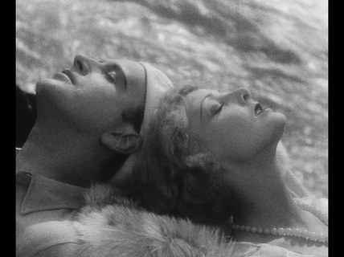
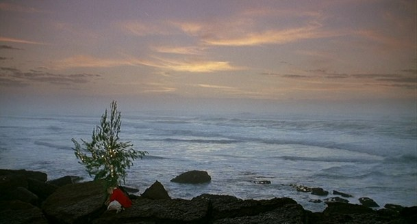
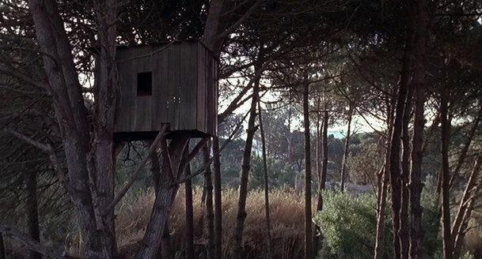
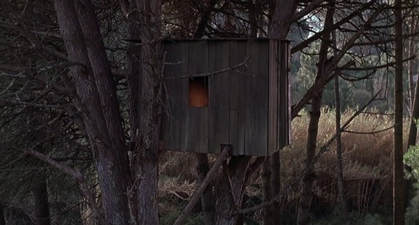
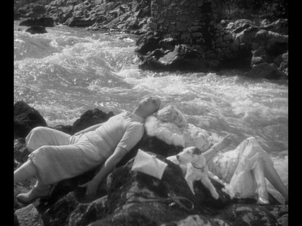
Epilogue: Use
The concepts at play absolutely relate to Schroeter - but all this talk of formal logic that should be used is not the exact implication I mean to impart. I use both Schroeter and Duvivier as a guide because they are artists who make the trajectory and visibility of these concepts immediately apparent through their relation to images and the symbol, but exacting a particular formal logic is not necessarily what I think should be done. The concepts of The Productive and Negative Realms are present to every film but become muddied and less visible depending on a particular film’s epistemological conditioning. If we are to detach the immediate union and see these concepts as they relate and flow together in every film as equals instead of combined, what will emerge from the culture is sight, and what you are supposed to do with sight is learn, and what you are supposed to do with knowledge is produce objects of use. From Schroeter to Rossellini, they make films outside of themselves through their subjectivity, and that is what has been locked out of our cinema today. There is endless going on and on one could impart relative to the uncomfortable ideological idea “the artist’s vision” has as an acceptable cultural ground or baseline. Faux geniuses are hailed, and we have our own geniuses, of course, but it is important to remember words aren’t the relation to culture that actually moves it. In this, what I desire is simply to take to the world and see it when watching a film. I don’t mean to impart a doctrine relative to “how to film” or particular topics or anything of the sort. Infinity is infinity. A centimeter off and a piece of mise-en-scene changes. An actress’s nose may appear different, a bag or chair may take a different shape, and within this, The Negative Realm moves the whole world. My point is: whatever change; polar opposites from the likes of Dorsky all the way to Preminger; what you are seeing has appeared to you nonetheless, and without use of this in any way possible you declare “God” dead.